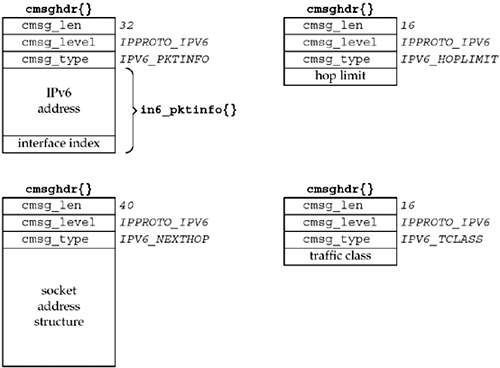

| [ Team LiB ] |
|
22.8 IPv6 Packet InformationIPv6 allows an application to specify up to five pieces of information for an outgoing datagram:
This information is sent as ancillary data with sendmsg. "Sticky" values can be set for the socket, so that they apply to every packet sent, as described in Section 27.7. Four similar pieces of information can be returned for a received packet, and they are returned as ancillary data with recvmsg:
Figure 22.21 summarizes the contents of the ancillary data, which we will discuss shortly. Figure 22.21. Ancillary data for IPv6 packet information. An in6_pktinfo structure contains either the source IPv6 address and outgoing interface index for an outgoing datagram or the destination IPv6 address and arriving interface index for a received datagram.
struct in6_pktinfo {
struct in6_addr ipi6_addr; /* src/dst IPv6 address */
int ipi6_ifindex; /* send/recv interface index */
};
This structure is defined by including the <netinet/in.h> header. In the cmsghdr structure containing this ancillary data, the cmsg_level member will be IPPROTO_IPV6, the cmsg_type member will be IPV6_PKTINFO, and the first byte of data will be the first byte of the in6_pktinfo structure. In the example in Figure 22.21, we assume no padding between the cmsghdr structure and the data, and 4 bytes for an integer. To specify this information for a given packet, just specify the control information as ancillary data for sendmsg. To specify this information for all packets sent on a socket, set the IPV6_PKTINFO socket option with the in6_pktinfo as the option value as described in Section 27.7. This information is returned as ancillary data by recvmsg only if the application has the IPV6_RECVPKTINFO socket option enabled. Outgoing and Arriving InterfaceInterfaces on an IPv6 node are identified by positive integers, as we discussed in Section 18.6. Recall that no interface is ever assigned an index of 0. When specifying the outgoing interface, if the ipi6_ifindex value is 0, the kernel will choose the outgoing interface. If the application specifies an outgoing interface for a multicast packet, the interface specified by the ancillary data overrides any interface specified by the IPV6_MULTICAST_IF socket option for this datagram only. Source and Destination IPv6 AddressesThe source IPv6 address is normally specified by calling bind. Supplying the source address together with the data may require less overhead. This option also allows a server to guarantee that the source address of its reply equals the destination address of the client's request, a feature some clients require and that is harder to accomplish with IPv4 (Exercise 22.4). When specifying the source IPv6 address as ancillary data, if the ipi6_addr member of the in6_pktinfo structure is IN6ADDR_ANY_INIT, then: (i) if an address is currently bound to the socket, it is used as the source address, or (ii) if no address is currently bound to the socket, the kernel will choose the source address. If the ipi6_addr member is not the unspecified address, but the socket has already bound a source address, then the ipi6_addr value overrides the already bound source address for this output operation only. The kernel will verify that the requested source address is indeed a unicast address assigned to the node. When the in6_pktinfo structure is returned as ancillary data by recvmsg, the ipi6_addr member contains the destination IPv6 address from the received packet. This is similar in concept to the IP_RECVDSTADDR socket option for IPv4. Specifying and Receiving the Hop LimitThe outgoing hop limit is normally specified with either the IPV6_UNICAST_HOPS socket option for unicast datagrams (Section 7.8) or the IPV6_MULTICAST_HOPS socket option for multicast datagrams (Section 21.6). Specifying the hop limit as ancillary data lets us override either the kernel's default or a previously specified value, for either a unicast destination or a multicast destination, for a single output operation. Returning the received hop limit is useful for programs such as traceroute and for a class of IPv6 applications that need to verify that the received hop limit is 255 (e.g., that the packet has not been forwarded). The received hop limit is returned as ancillary data by recvmsg only if the application has enabled the IPV6_RECVHOPLIMIT socket option. In the cmsghdr structure containing this ancillary data, the cmsg_level member will be IPPROTO_IPV6, the cmsg_type member will be IPV6_HOPLIMIT, and the first byte of data will be the first byte of the (4-byte) integer hop limit. We showed this in Figure 22.21. Realize that the value returned as ancillary data is the actual value from the received datagram, while the value returned by a getsockopt of the IPV6_UNICAST_HOPS option is the default value the kernel will use for outgoing datagrams on the socket. To control the outgoing hop limit for a given packet, just specify the control information as ancillary data for sendmsg. The normal values for the hop limit are between 0 and 255, inclusive, but if the integer value is -1, this tells the kernel to use its default.
Specifying the Next-Hop AddressThe IPV6_NEXTHOP ancillary data object specifies the next hop for the datagram as a socket address structure. In the cmsghdr structure containing this ancillary data, the cmsg_level member is IPPROTO_IPV6, the cmsg_type member is IPV6_NEXTHOP, and the first byte of data is the first byte of the socket address structure. In Figure 22.21, we show an example of this ancillary data object, assuming the socket address structure is a 28-byte sockaddr_in6 structure. In this case, the node identified by that address must be a neighbor of the sending host. If that address equals the destination IPv6 address of the datagram, then this is equivalent to the existing SO_DONTROUTE socket option. The next-hop address can be set for all packets on a socket by setting the IPv6_NEXTHOP socket option with the sockaddr_in6 as the option value, as described in Section 27.7. Setting this option requires superuser privileges. Specifying and Receiving the Traffic ClassThe IPV6_TCLASS ancillary data object specifies the traffic class for the datagram. In the cmsghdr structure containing this ancillary data, the cmsg_level member will be IPPROTO_IPV6, the cmsg_type member will be IPV6_TCLASS, and the first byte of data will be the first byte of the (4-byte) integer traffic class. We showed this in Figure 22.21. As described in Section A.3, the traffic class is made up of the DSCP and ECN fields. These fields must be set together. The kernel may mask or ignore the user-specified value if it needs to control the value (e.g., if the kernel implements ECN, it may set the ECN bits to its own desired value, ignoring the two bits specified with the IPV6_TCLASS option). The traffic class specified may be in the normal range of 0 to 255, or -1 to allow the kernel to use its default value. To specify the traffic class for a given packet, include the ancillary data with that packet. To specify the traffic class for all packets on a socket, specify the traffic class as an integer to the IPV6_TCLASS socket option, as described in Section 27.7. The received traffic class is returned as ancillary data by recvmsg only if the application has the IPV6_RECVTCLASS socket option enabled. |
| [ Team LiB ] |
|